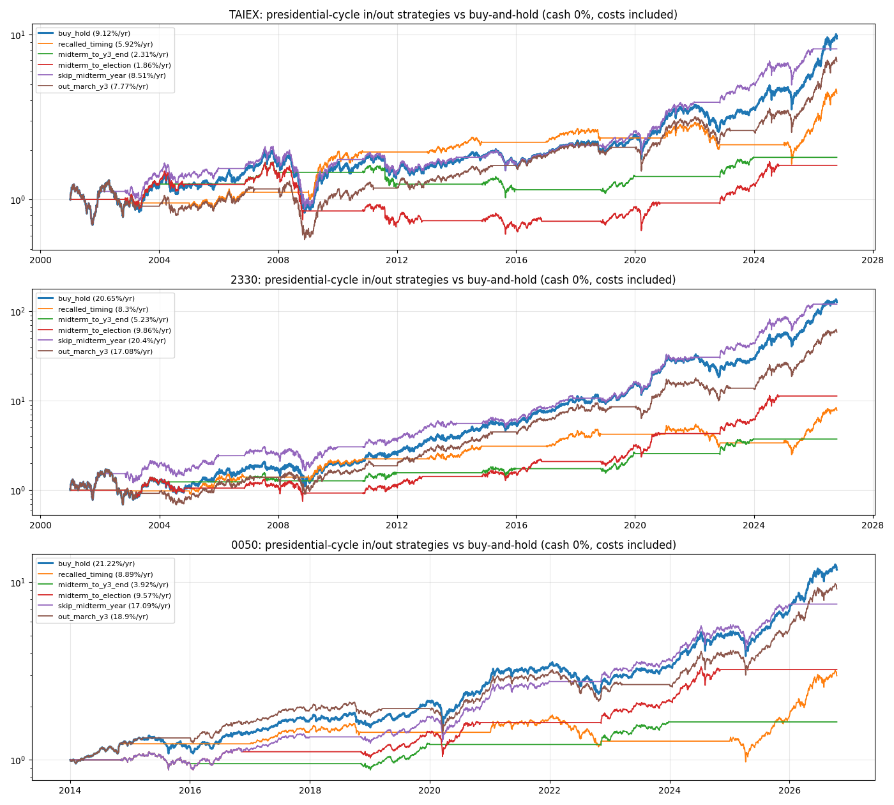

RS-TX-20261018-001 · TX · 2026-10-18
Presidential-cycle in/out rules on TAIEX, TSMC and 0050 — none beats buy-and-hold; skipping the midterm year comes closest and missed 2026
把總統週期做成進出場規則、算進台股交易成本後，能不能贏過一直持有加權、台積電或 0050？
Headline Metrics 關鍵數字
9.12
taiex buy hold cagr %
8.51
taiex skip midterm cagr %
20.65
tsmc buy hold cagr %
17.08
tsmc out march y3 cagr %
Key Findings 重點發現
三個標的都是一直持有最好
年化 2001–2026：加權 9.12%（不含股息）、台積電 20.65%；0050 自 2014 年 21.22%。沒有一種進出規則超過。
跳過期中選舉年最接近
加權 8.51%、台積電 20.40%，台積電最大回檔 −46.5% 對 −59.8%；分別在 6 輪中贏 3 輪、2 輪，平均差異無法分辨。2026 年空手，期間加權漲約 63%。
選前一年 3 月出場會少賺
加權 7.77%、台積電 17.08%、0050 18.90%；分別在 6、6、2 輪中只贏 2、2、0 輪。
只持有一半時間的規則落後 3–17 個百分點
只在 27–50% 的時間持有，少賺的上漲多於避開的下跌。
Chart 圖表


詮釋與實務意義
把總統週期做成台股進出規則並計入成本，沒有一種贏過一直持有。進出的代價是少了持有時間：台股長期上漲，空手錯過的漲幅多於避開的下跌。要降低風險，應該調整配置，而不是擇時進出。
限制與注意事項
- 6 個完整週期（0050 只有 2 個），差異無法分辨。
- 加權為價格指數（不含每年約 3–4% 股息），對持有現金的規則有利；現金 0%。
- 台灣大選和美國大選同年，無法分開兩種日曆。
- Yahoo 資料；0050 2014 年前資料有誤而排除；台積電有成交量為 0 的元旦資料列，影響可忽略。